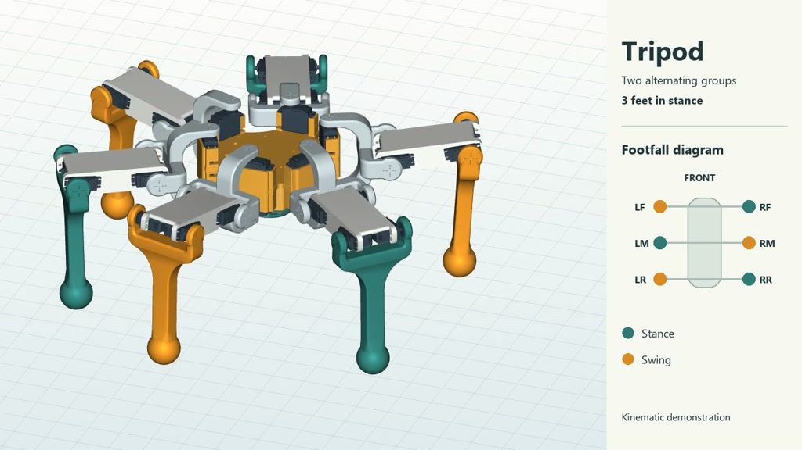
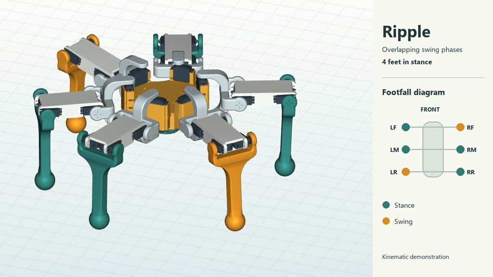
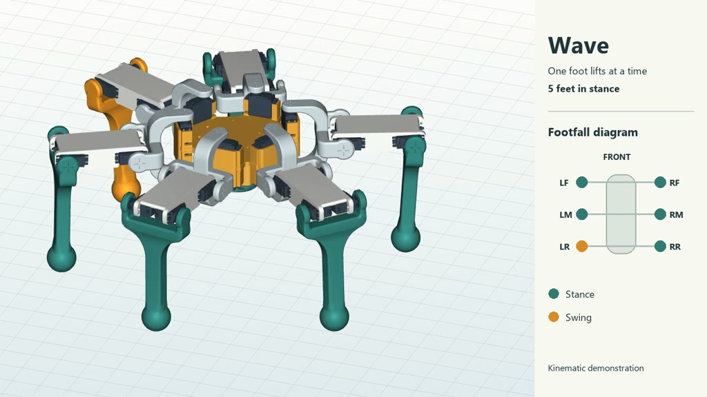

Stance 3 · Swing 3
Tripod Gait
Left front, right middle, and left rear swing together while the opposite three stay planted, then exchange roles every half cycle.
All three CAD-based walking animations use the 57 exported SOLIDWORKS component instances with identical kinematic parameters: 60 mm stride per cycle, 22 mm peak foot clearance, 12 mm/s chassis speed, and two five-second cycles over a 50 mm reference grid. Amber markers show feet in swing; teal markers show planted feet in stance.

Left front, right middle, and left rear swing together while the opposite three stay planted, then exchange roles every half cycle.

The next leg lifts before the previous swing finishes, keeping four feet planted while two swings overlap across left and right sides.

Only one foot swings at a time, moving rear to front along the left side and then rear to front along the right while five feet stay planted.